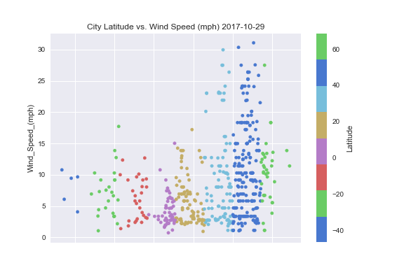

Latitude vs. Windiness

Each 20°gradiant of latitude is color coded with the color red representing the equator and cooler blues representing the approach towards the poles. While a definitive conclusion is not readily apparent, this particular snapshot of wind vs latitude suggested higher winds as you left the equator and traveled to Northern latitudes.